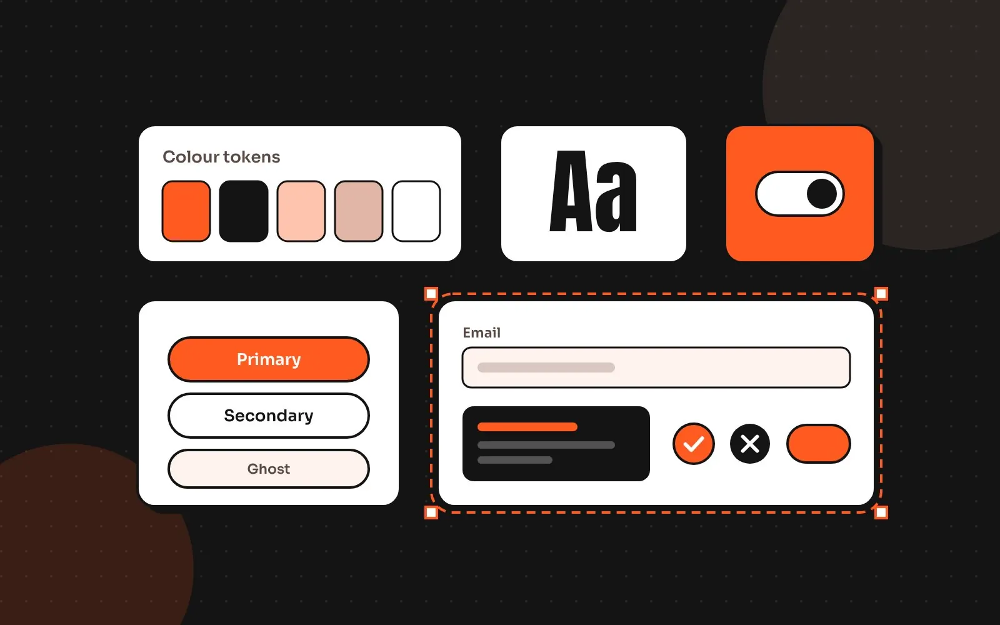
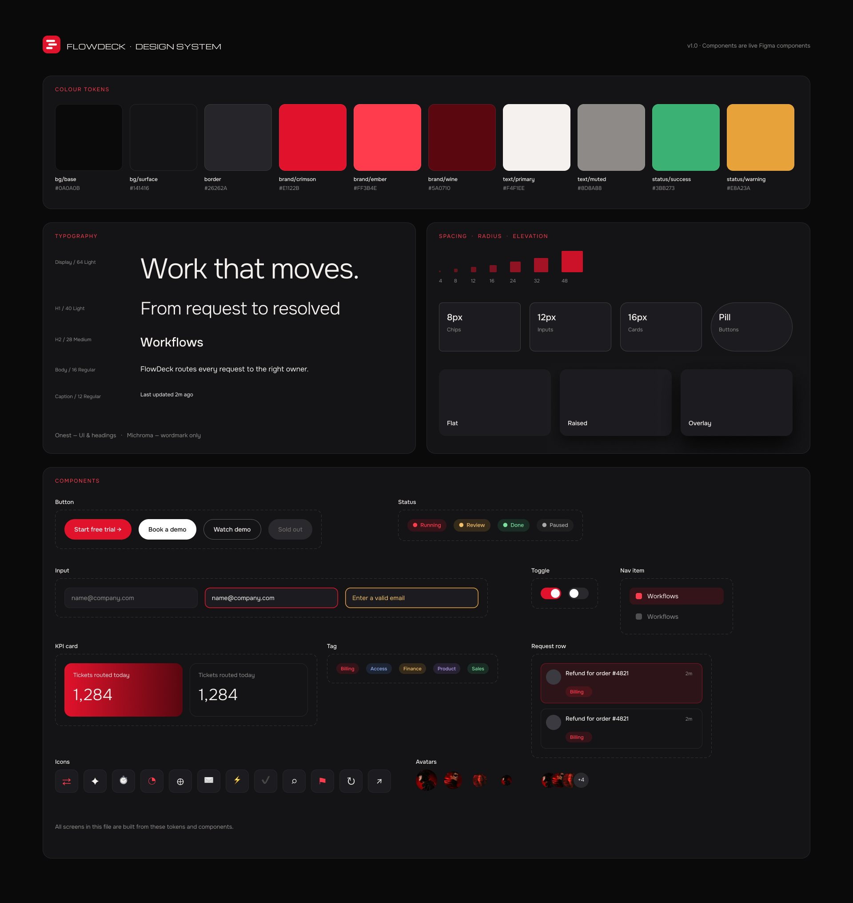

Figma Design Systems for Startups: When You Need One and How to Start
You don’t need a 200-page design system. You need the right 20 components, and a way to keep them tidy.

Design systems have a reputation for being huge projects only big companies can afford. For a startup, a design system can be small, practical and live in one Figma file. Done right, it makes every new screen faster to design and easier to build.
Signs you need one
- The same button exists in five slightly different styles
- Developers ask “which grey is it?” every week
- New features take longer to design than they should
- Your web app and mobile app feel like different products
If two or more of these sound familiar, it’s time.
A design system also helps outside design. Developers ship faster when they can reuse coded components, product managers can sketch ideas with real pieces and new designers get up to speed in days instead of weeks.
Step 1: Start with tokens
Tokens are the smallest decisions: colours, type sizes, spacing and corner radius. In Figma, set them up as variables so a change in one place updates everything. Keep the palette short; a primary colour, neutrals and a few status colours cover most products.

- Colour: brand, neutrals, success, warning, error
- Type: 5–7 sizes with set line heights
- Spacing: a scale like 4, 8, 12, 16, 24, 32, 48
- Radius and shadows: two or three of each
- Modes: light and dark from the same tokens
Step 2: Build the components you use every day
Don’t design a component library in theory. Look at your real screens and build the pieces that appear most: buttons, inputs, selects, cards, tables, modals, navigation and alerts. Give each component clear variants (size, state, icon) instead of creating copies.
Name components the way your developers do. If the code says “PrimaryButton”, the Figma component should too. Matching names make handoff faster and reduce mistakes, especially when the system is used by several people.
Step 3: Document patterns, not just parts
A form isn’t just inputs; it’s spacing, labels, errors and the order of fields. Short pattern notes (“how we do forms”, “how we show empty states”) prevent the same debate happening in every sprint.
Step 4: Design for accessibility from day one
Check colour contrast, focus states and touch target sizes in your components, and every screen built from them inherits the fix. The WCAG accessibility guidelines are the reference most teams follow.
Step 5: Keep it alive
A design system dies when nobody owns it. Pick one person to approve changes, keep a short changelog and review the library once a month. Small and maintained beats big and abandoned.
It also helps to connect the Figma library to your codebase. Even a simple shared list of component names and token values keeps design and development in sync as the product grows.
Mistakes that make design systems fail
- Building every possible component before shipping any
- Copying a big company’s system that doesn’t fit your product
- Skipping documentation, so nobody knows which variant to use
- Letting designers detach components instead of improving them
The fix for all of these is the same: build from real screens, document briefly and treat the system as a product with its own small roadmap.
How long does it take?
A starter system with tokens and core components can be ready in a couple of weeks for most startups, and it grows as the product grows. If you’re about to scale your product or team, it’s one of the best investments you can make. Design systems are one of my core services, and I’m happy to look at your current files.
Send me your screens and I’ll show you where users drop off and what to fix first.
Quick answers
When should a startup build a design system?
When the same UI elements are repeated inconsistently, new features slow down or you have multiple platforms that should feel like one product.
What should a startup design system include first?
Design tokens (colour, type, spacing) and the most-used components such as buttons, inputs, cards, tables and navigation.